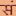

Conversation 424
Annan Atman Meaning
Prompt 1 · You
anan atman
Response 1 · Google AI Mode
"Annan Atman" is a respectful and affectionate term used by fans to refer to the popular Tamil film actor Silambarasan TR (widely known as Simbu or STR).  Instagram +1
Instagram +1
Instagram +1In Tamil, "Annan" translates to "older brother", while "Atman" (meaning "soul" or "self") is a spiritual moniker that Simbu officially adopted as a title and screen prefix to represent his personal evolution, resilience, and unique identity in the film industry.  Facebook +3
Facebook +3
Facebook +3🎭 Context in Tamil Cinema
- The Moniker: Fans frequently use the phrase "Happy Birthday my annan Atman STR" or share viral tribute reels with lines like "Annan en usuru da" (My brother is my life) to show fierce loyalty toward him. Instagram +3
- Recent Projects: Simbu recently wrapped up his role in Mani Ratnam's massive action project Facebook Thug Life. He is currently shooting for the highly anticipated Tamil movie Arasan, directed by Vetri Maaran with music composed by Anirudh Ravichander. Instagram +1
Are you looking for a specific movie announcement, viral video dialogue, or song associated with Atman Simbu? Let me know what you'd like to explore next!
Source links preserved from this response
- Instagram
https://www.instagram.com/reel/DURPZV8k8C4/ - Facebook
https://www.facebook.com/SimbuLive/posts/silambarasantr-in-a-timeless-traditional-avatar-tamilcinema/1479266533566515/ - Instagram
https://www.instagram.com/reel/DQ4Smr5iGbk/ - Facebook
https://www.facebook.com/ - Thug Life
https://en.wikipedia.org/wiki/Thug_Life_(film) - Arasan
https://en.wikipedia.org/wiki/Vada_Chennai - Instagram
https://www.instagram.com/p/DWKa2IBE3jb/
Prompt 2 · You
Sanskrit and western halo
Response 2 · Google AI Mode
The halo is a cross-cultural visual symbol of divinity and enlightenment. While its use evolved similarly across Eastern and Western iconography, the conceptual framework behind it splits into the terminology of Sanskrit traditions (Hinduism, Buddhism, Jainism) and the Western traditions (Ancient Greece, Rome, and Christianity).  BBC +2
BBC +2
BBC +2Curiously, while they developed unique theological contexts, historical evidence shows they share a common ancestor: the ancient Iranian/Zoroastrian concept of hvarena (divine solar glory). It spread outward along the Silk Road through the Kushan Empire, influencing both early Greco-Buddhist art in Gandhara and late Roman imperial iconography. BBC +1
BBC +1☸️ The Sanskrit Tradition (Eastern Iconography)
In Sanskrit texts and South Asian art, a halo is rarely a simple floating ring. It is treated as an anatomical or atmospheric projection of a deity’s intense inner power, spiritual purity, or cosmic energy.
Core Sanskrit Terms & Concepts:
- Prabhāmaṇḍala (प्रभामण्डल): Translates to "circle of light" or "orb of radiance". It represents the expansive, glowing aura enveloping a divine being.

Sanskrit - Dictionary +2 - Prabhāvalī (प्रभावली): Translates to an "array/line of radiance". In Hindu temple sculpture, the Prabhāvalī evolved into an ornate, physical, semicircular arch framing the entire murti (deity statue) to amplify its spiritual presence. Exotic India Art +1
- Śiraścakra (शिरश्चक्र): Translates directly to "head wheel". This refers specifically to a circular disc or sun-like wheel situated directly behind a deity's head. Exotic India Art
- Tejomaṇḍala (तेजोमण्डल): A "circle of tejas" (spiritual fire or vital majesty). Sanskrit - Dictionary
Visual Style:
Sanskrit-tradition halos are often highly dynamic. They frequently feature intricate patterns, lotus petals, solar rays, or bursting flames (particularly in Tibetan Buddhist Thangkas and wrathful Hindu deities) to signify active cosmic energy.  Wikipedia +2
Wikipedia +2
Wikipedia +2✝️ The Western Tradition (Greek, Roman, and Christian)
In Western art, the halo transitioned from a symbol of cosmic power and imperial status into a definitive marker of Christian holiness.
Quora +1
Core Western Terms & Concepts:
- Halo (from Hálōs - Ancient Greek): Originally meant a "threshing floor" because oxen walking in circles created a smooth, round shape, which later came to define the disc of light around the sun or moon.
- Nimbus (Latin): Translates to "cloud" or "storm-cloud." In Roman mythology, it described the luminous cloud that enveloped deities when they appeared on Earth. Christianity adopted it to mean a radiant disk strictly around the head.
- Aureole / Mandorla (Latin/Italian): "Aureole" (from aurum, gold) represents an almond-shaped almond shroud of light. While a nimbus covers just the head, a Mandorla surrounds the entire body, traditionally reserved for Jesus Christ or the Virgin Mary. Wikipedia
Visual Style:
Western halos evolved structurally through art history. Early Christian art utilized solid, opaque golden discs. During the Renaissance, as realism advanced, artists like Giotto and Leonardo da Vinci shifted the halo from a heavy gold plate to a subtle, three-dimensional floating ring of light or a faint, transparent glow mimicking natural light.  YouTube·Religiosity Plus
YouTube·Religiosity Plus
YouTube·Religiosity Plus📊 Quick Comparison
| Feature | Sanskrit Tradition ☸️ | Western Tradition ✝️ |
|---|---|---|
| Primary Meaning | Outward radiation of inner spiritual fire (tejas) or cosmic power. | Divine favor, absolute holiness, or heavenly light. |
| Aesthetic Form | Often features intricate filigree, lotus motifs, or active flames. | Plain geometric circles, golden solid plates, or transparent floating rings. |
| Full-Body Frame | Prabhāvalī: An architectural arch or frame surrounding the deity. | Mandorla: An almond-shaped body pod of cosmic light. |
| Variations | Varies by the deity's nature (peaceful deities have soft rings; wrathful have fire). | Structural variations denote hierarchy (e.g., Cruciform halo with a cross inside for Jesus). |
Source links preserved from this response
- BBC
https://www.bbc.com/culture/article/20210623-the-halo-a-symbol-that-spread-around-the-world - Sanskrit - Dictionary
https://www.learnsanskrit.cc/translate?search=halo&dir=es - Exotic India Art
https://www.exoticindiaart.com/article/prabhavali/ - Wikipedia
https://en.wikipedia.org/wiki/Halo_(religious_iconography) - Quora
https://www.quora.com/How-did-the-religious-halo-symbol-originate - YouTube · Religiosity Plus
https://www.youtube.com/watch?v=0ABsjaZC2r8&t=427